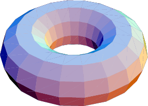
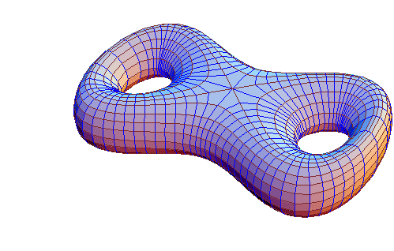
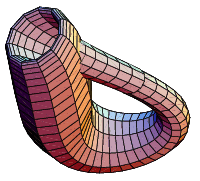

Some random Topology information

All points in three-dimensional Euclidean space R^3 that are located at a distance r from a given point

It can be constructed from a rectangle by gluing both pairs of opposite edges together with no twists.

A sphere with two handles and two holes, i.e., a genus-2 torus.

It can be constructed by gluing both pairs of opposite edges of a rectangle together giving one pair a half-twist.